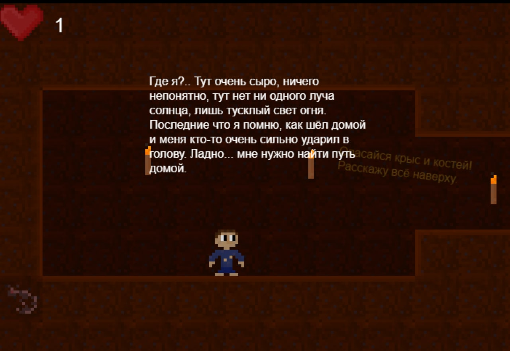

Многое другое, связанное с компьютерами
Веб-дизайн
За время курса веб-дизайна мне очень понравилось делать сайты, поэтому, я бы мог назвать его своим увлечением. Этот сайт я делал хоть и долго, но с огромным удовольствием. Еще мне бы очень хотелось попробовать сделать Вики сайт по чему-нибудь, например, по какой-нибудь игре.
Созадние игр
Вообще созданием игр я увлекался чуть-ли не с 8-ми лет, всегда искал какие-нибудь программы для создания игр. Первой моей полноценной игрой был динозаврик, как гугл, только цветной и со скинами.
Второй моей полноценной игрой был "Побег из подвала", про ребенка, который должен сбежать от маньяка. Делал я ее на движке Construct 3, поэтому поиграть в неё не получится :(.
Но зато есть скриншот:
Как я говорил выше, хочу делать игры на юнити, потому что это лучшая площадка для инди игр. У меня был опыт, но фактически это просто тупое списывание кода.
Моделирование
Это еще одно увлечение, связанное с компьютерами, которым я увлекался еще до академии. Мне всегда было интересно строить что-то, а моделирование это именно то, что нужно. Больше всего мне нравится моделировать здание и игровые карты. Это всё, что я могу тут сказать.